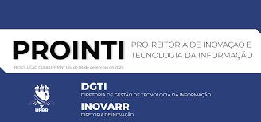
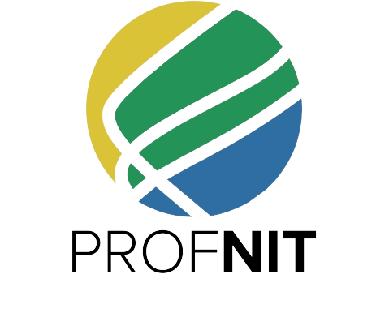

Um toolkit completo para facilitar oficinas de Propriedade Intelectual. Combine Design Thinking para transformar PI em experiência prática, colaborativa e envolvente.


O PI Thinking é um toolkit educacional que reúne ferramentas de Design Thinking aplicadas ao universo da Propriedade Intelectual. Desenvolvido no âmbito do PROFNIT — ponto focal UFRR, alinhado ao Eixo 2 da ENPI 2021-2030. São 16 ferramentas organizadas em 3 níveis de prioridade para oficinas de 2 a 4 horas.
Três trilhas pré-montadas para diferentes durações. Cada uma garante uma experiência completa com profundidade adequada ao tempo disponível.
Cada fase possui ferramentas classificadas em Essencial, Recomendada ou Opcional.
"O que os participantes já sabem sobre PI?"
"Qual tipo de proteção se aplica a cada criação?"
"Como planejar a proteção de forma estratégica?"
"Como testar e validar o plano de proteção?"
"Quanto aprendemos e como seguir em frente?"
Funcionam no navegador sem instalação. Use durante a oficina como consulta ou como material de apoio entre sessões.
Wizard que identifica o tipo de proteção ideal entre 10 modalidades.
Usar Agora →Para percursos de 2h ou 3h, use apenas as ferramentas marcadas como Essencial ou Recomendada conforme a seção Percursos.
Quiz Diagnóstico — 10 perguntas para mapear conhecimento prévio. Registrar código D-X.
Cartas Personas (essencial) + Mapa de Empatia (recomendada). Sortear persona, preencher canvas.
Canvas de Diagnóstico (essencial) → Árvore de Decisão (essencial) → Linha do Tempo (opcional).
Coffee break. Expor canvas na parede.
Painel de Busca Guiada (recomendada) → Roteiro de Proteção (recomendada) → Canvas de Estratégia (essencial).
Simulador de Depósito (essencial, 30 min) → Baralho de Dilemas (essencial, 15 min) → Escape Room (opcional, 15 min).
Jornada da PI (pós-oficina) → Quiz Final (essencial) — comparação D-X vs F-X.
Canvas de Avaliação (recomendada) + Certificados e próximos passos.
Todos os materiais prontos para uso. Os badges indicam a classificação de prioridade.
Se você tem apenas 2 horas, use o Percurso Compacto (8 ferramentas essenciais). Com 3 horas, o Percurso Padrão adiciona Mapa de Empatia, Painel de Busca Guiada, Roteiro de Proteção e Canvas de Avaliação. Com 4 horas, inclua todas as ferramentas, acrescentando ferramentas síncronas como Linha do Tempo e Escape Room, e liberando a Jornada da PI como trilha pós-oficina.
Não. O Guia do Facilitador contém todas as instruções, e as ferramentas digitais possuem explicações integradas. Recomenda-se ler o guia com 48h de antecedência.
Sim! As personas foram contextualizadas para a Amazônia, mas você pode adaptar nomes e contextos mantendo a diversidade de tipos de PI.
Sim. Após carregar a página uma vez, as ferramentas funcionam no navegador sem conexão contínua com a internet.
Todo o conteúdo é licenciado sob CC BY-NC-SA 4.0. Você pode usar, adaptar e compartilhar para fins não comerciais, desde que atribua os créditos.
Essencial (8 ferramentas): formam o percurso mínimo viável — garantem que o participante saia da oficina compreendendo os tipos de PI, sabendo classificar criações e tendo simulado um depósito. Recomendada (4 ferramentas): enriquecem a experiência com ideação criativa, narrativa visual e feedback estruturado. Opcional (3 ferramentas): atividades gamificadas e de contextualização histórica, ideais para oficinas longas ou como bônus. As 4 ferramentas de apoio (Calculadora, Glossário, Busca, Árvore) estão sempre disponíveis para consulta.